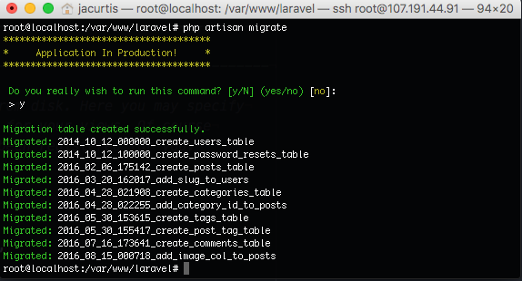

Storyteller
Full Installation Documentation by George Kobylyanskiy
Introduction
- Item Name : Storyteller
- Item Version : v 1.0
- Author : George Kobylyanskiy
Thank you so much for purchasing this Item and for being my customer.
You are awesome!
You can get support for this Item by contacting me through Codecanyon profile George Kobylyanskiy.
The following sections are dedicated to the process of Installation
Please read them carefully.
Please be careful.
Make sure to show hidden files when you copy Backend to your server.
New to Flutter?#back to top
You can find all the Information about Installing and Using it here: Flutter

Where Should I Host?#back to top
You can host it anywhere you wish. Keep in mind that this tutorial will cover setting up your server through SSH into your VPS instance. This means that it really doesn’t matter who you host through, once you have your IP address and you log into the server via SSH, the tutorial will work the same regardless of your host. So feel free to choose whoever you prefer for hosting your server, you can still follow this tutorial exactly the same.
This Documentation Covers the process of Installation for Ubuntu 18.04.3 (LTS) x64 Server
Minimal spec for the Server:
Logging Into Your Server#back to top
ssh root@100.100.100.100
Simply replace 100.100.100.100 with the IP address for your server. You will have this IP address in your dashboard on your host, or in an email sent to you from your host after the server finished setting up. You might want to write this down somewhere nearby for the time being since we will need it several times going forward.
Update Package Installer#back to top
We will be using the Apt-Get package installer to install new programs on our server. Think of this like the Apple App Store or Google Play Store, except not as cool looking, and it is for Linux programs. Before we start installing things, let’s make sure that our Apt-Get Installer is up to date. To do this just tell it to update with this command:
sudo apt-get update
You will see a bunch of text, and eventually you will get your command prompt again. I encourage you to read some of the output to get used to how apt-get works. The chances of this failing are pretty small, so everyone should be able to move on easily from here.
Install Nginx#back to top
Now that we are up to date with our installer, let’s use it to install our server Nginx.
sudo apt-get install nginx
It is surprising how easy this is. If you are using Ubuntu 16.04, then Nginx will even start running itself after being installed.
Install MySQL#back to top
Ok, a server isn’t much use without a database. In fact our Laravel application is kind of a waste unless we have a database to store our information (otherwise why not make a single page app or plain old HTML?).
Of course you could always install another database, but we will be installing MySQL here. To get started, we need to use Apt-Get to go install the base Mysql Install.
sudo apt-get install mysql-server
This will start installing MySQL. Let the install run until a bright pink/purple screen pops up. This might just be the worst color selection for any terminal application ever, but there isn’t much we can do about it but to embrace it. You will want to type in a password to use for the root MySQL user.

You can now secure your installation by using this command:
sudo mysql_secure_installation
Install PHP#back to top
Ok I kind of tricked you, because your Ubuntu instance probably already has base PHP set up. But you need to set up PHP for processing. This comes in the form of a plugin called php-fpm which is a boring as hell name which sounds much cooler in its full version “FastCGI Process Manager”.
We need to install both php-fpm and while we are at it, we will grab php-mysql which as you might guess, allows us to use PHP to talk to MySQL. Lastly we will install php-mbstring which is a requirement for Laravel.
sudo apt-get install php-fpm php-mysql php-mbstring
Configure PHP#back to top
With the stack installed, it is now time to configure everything to get it working. There isn’t much to configure with PHP, but there is one small security fix we need to make.
In your terminal, open up your php.ini file in whatever text editor you wish (VIM, or eMacs) but for simplicity, we will use Nano in this tutorial.
sudo nano /etc/php/7.2/fpm/php.ini
The line we need to edit is cgi.fix_pathinfo=0 so you can either search for it like a needle in a haystack, or you can search for it using Ctrl+W , I personally recommend searching for it. Press Ctrl+W and now type in cgi.fix_pathinfo= and click enter. This will take you to the right line right away. You will see a semicolon the left of this line. Delete the semi colon and then change the 1 into a 0 and save the file. The file should look like this upon saving:
To save something in Nano, just press Ctrl+X and type Y and then press Enter. Before the changes can take effect we need to restart php-fpm by typing in this command:
sudo systemctl restart php7.2-fpm
Configure Nginx#back to top
Here is where things will start to get a little tricky. Get your thinking caps on and lets configure our server engine. All the configuration we need to make is in the following config file. Go ahead and open it up in Nano using the following command (use another editor if you prefer).
sudo nano /etc/nginx/sites-available/default
You will see a lot of lines with # in front of them, these are comments. For simplicity, we will remove comments in this tutorial to make it easier to see what changed.
server {
listen 80 default_server;
listen [::]:80 default_server;
root /var/www/html;
index index.html index.htm index.nginx-debian.html;
server_name _;
location / {
try_files $uri $uri/ =404;
}
}
The first change we need to make to this file is to allow it to recognize index.php as a valid file to deliver. In the line with all of the index names, we will add index.php to the list of allowed file types to deliver by default. What this line tells Nginx is to first look for an index file, then look for an index.php file, then an index.html file and so forth. It will start at the beginning and work down until it finds a matching file. Then the matching file is what is sent to the user. We want it to deliver an index.php file before an index.html file, so the order is important here. Add the red text shown below.
server {
listen 80 default_server;
listen [::]:80 default_server;
root /var/www/html;
index index.php index.html index.htm index.nginx-debian.html;
server_name _;
location / {
try_files $uri $uri/ =404;
}
}
Next we need to add our public domain or IP address to the server_name line. This tells Nginx the domain to respond to. I am going to use an IP address for this tutorial since I am not setting up a domain. But if you have a domain name that you want this server to use then you would put the domain name here instead.
server {
listen 80 default_server;
listen [::]:80 default_server;
root /var/www/html;
index index.php index.html index.htm index.nginx-debian.html;
server_name 107.191.44.91;
location / {
try_files $uri $uri/ =404;
}
}
Now we need to do a few other housecleaning items. You will want to just trust me on these as they get more complex, but the concepts of what they accomplish should make sense to you. First things first we want to tell Nginx to use your php-fpm that we installed earlier. This will be represented by the first location block that we add (it will actually be the second on in the document though, make sure to leave the first location block alone (for now, we will come back to configure it for Laravel later). The second location block we are adding (the third in the file) will be telling Nginx to ignore .htaccess files. This is because .htaccess files are for Apache and we are using Nginx. Sometimes Laravel files will have .htaccess files in them by default so let’s just make sure that if one gets onto our server to make sure it doesn’t interfere with anything and our users do not have access to it. These changes are marked in red below If you scroll down in your file you will notice that these two location blocks are already written for you, just uncomment the lines if you like or write it as shown below. If you decide to uncomment the lines, make sure you leave the notes commented out and also there is a line that reads fastcgi_pass 127.0.0.1:9000 that should stay commented. Basically just make sure that your uncommented lines match what is below.
server {
listen 80 default_server;
listen [::]:80 default_server;
root /var/www/html;
index index.php index.html index.htm index.nginx-debian.html;
server_name 107.191.44.91;
location / {
try_files $uri $uri/ =404;
}
location ~ \.php$ {
include snippets/fastcgi-php.conf;
fastcgi_pass unix:/run/php/php7.2-fpm.sock;
}
location ~ /\.ht {
deny all;
}
}
So that is all we need to do for now. We will come back to this file again in a moment, but let’s save and close it for now just to make sure everything is good to go. To save it remember to press Ctrl + X and then type Y and then press enter. Now that we have saved the file, make sure it is error free by typing:
sudo nginx -t
If everything was correct then you should get this notice when submitting the command:
nginx: the configuration file /etc/nginx/nginx.conf syntax is ok
nginx: configuration file /etc/nginx/nginx.conf test is successful
This means you have no errors. Good work, now to let it take effect you can restart Nginx:
sudo systemctl reload nginx
With this set up, you are now ready to deploy any PHP application. The server is all set up to accept and deliver it. So in the next few steps we will set it up specifically to work for Laravel 5.
Create A Folder for Laravel#back to top
Now that our server is ready to serve files, lets get Laravel files set up so that our server can do what it was born to do and serve them. By default Nginx will look in our /var/www/ folder as the root of where to serve files. So we will add another folder in here called laravel (or whatever you want to call it) and place our Laravel app there.
sudo mkdir -p /var/www/laravel
Now we have a folder to store Laravel in. Let’s update Nginx so that it knows about this folder. Of course we don’t just tell Nginx about the folder, we need to tell it where to find the default page to run whenever there is a web request. This means we need to understand something about Laravel first. In Laravel, there is a file called index.php in our public directory. This file is a php file that is actually most of the magic behind Laravel. Regardless of our routes, we always want to load this file. This file then grabs information about the request and sends it to our routes file (in routes/web.php in Laravel 5.3) which then parses the url that was passed into it to determine which controller to send it over to. When the routes file determines which controller and action to implement it does so, executes your controller action, which most likely returns a view that is what ultimately is returned to the user.
The reason that this workflow is important to understand is that regardless of which route you go to, the page that is always loaded is the index.php page. All the routes and views that you see are actually the result of loading this same page on every request. I share this information with you to explain that we just need to tell Nginx to always load the index.php page no matter what, and after that Laravel will do the rest. In order to update Nginx, we are going to edit the same file we edited before. I will use Nano again, using this command:
sudo nano /etc/nginx/sites-available/default
This time our focus will be on the root line which is the location that Nginx starts looking for a file to send back to the user. Right now it will default to /var/www/html which is actually just fine location for our app if you want to use it. But we will change it to the laravel/ folder that we just created.
server {
listen 80 default_server;
listen [::]:80 default_server ipv6only=on;
root /var/www/laravel/public;
index index.php index.html index.htm;
server_name 100.100.100.100;
location / {
try_files $uri $uri/ =404;
}
# more location blocks continue below
# (no changes needed beyond this point)
Just edit the one line on root, even though the rest of the file is not displayed above, leave it how it was in the previous steps, only edited the red text. You will now see that we point to the laravel/public/ directory. This is because the index.php file that we want to use is inside the public/ folder. You can see below that once it gets in that folder it will start looking for index and then index.php where it will find our file and then in turn execute Laravel. Finally you might remember how I said that the index.php file collects the query data in order to pass it into Laravel. Well we need to do that now, attaching our query string onto the end of the index.php. We will do this after the $uri and $uri/ so that if there is something that needs to overwrite Laravel, they can execute before it gets to Laravel. An example of this is like if you have example.com/phpmyadmin you want the phpmyadmin uri to execute before Laravel. But most stuff will just get caught by Laravel. We also remove the 404 error because we will let Laravel decide if something needs to respond with a 404 error. Change only the red text and leave everything as it was (remember that the server_name on this example will not match your file, yours will either be the domain name or IP address you were given):
server {
listen 80 default_server;
listen [::]:80 default_server ipv6only=on;
root /var/www/laravel/public;
index index.php index.html index.htm;
server_name 100.100.100.100;
location / {
try_files $uri $uri/ /index.php?$query_string;
}
# more location blocks continue below
# (no changes needed beyond this point)
Now make sure to save the file (Ctrl + X and then Y and then press the enter key). Once you are back at your ssh session (exited Nano) you can restart Nginx so the changes we made take effect.
sudo service nginx restart
Try visiting your url now in the browser and if everything worked then you should now get a 404 page instead of the Nginx success page (this is actually a GOOD thing). This is because now Nginx is pointing at the Laravel folder (specifically the public folder inside the Laravel folder) instead of the html folder which contains that success page. Of course we haven’t installed Laravel yet, so that public folder doesn’t exist, hence the 404 error.
Now you can open your folder (/var/www/laravel/) using FileZilla (or other tools) and upload files from Smile-backend there.
Install Composer#back to top
You have installed composer before (otherwise you wouldn’t have made it to this point in your life where you are reading a tutorial about how to deploy a Laravel app), and this is no different than before. Follow the instructions just like on the GetComposer.org website.
curl -sS https://getcomposer.org/installer | php
Now we have composer.phar in our home folder, and it’s time to move it into our bin so we can use composer commands easier by just typing composer.
sudo mv composer.phar /usr/local/bin/composer
Run Composer#back to top
So, run this command in order to avoid any further issues:
sudo apt install php-xml
And hey, remember when we installed composer a while ago? Well let’s use it. Now that we have Laravel on our server and all the files we need, lets run composer to get it working. Make sure you are in /var/www/laravel/ when you run composer commands because you want to be inside your laravel project.
composer install --no-dev
Laravel Permissions#back to top
In order to run, Nginx needs certain permissions over the Laravel directory we made. We need to first change ownership of the laravel directory to our web group.
sudo chown -R :www-data /var/www/laravel
sudo chmod -R 775 /var/www/laravel
Database Setup#back to top
Lets get into MySQL by typing the following command:
mysql -u root -p'yourpassword'
Enter the following commands to create new Database (You can change 'laravel' to the name of your choice and replace 'secret' with your password for new Database user):
mysql> CREATE DATABASE laravel;
mysql> CREATE USER 'newuser'@'localhost' IDENTIFIED BY 'secret';
mysql> GRANT ALL PRIVILEGES ON laravel.* TO 'newuser'@'localhost' WITH GRANT OPTION;
mysql> FLUSH PRIVILEGES;
mysql> quit
Working with Your .env file#back to top
Now we can edit our .env by opening it with a text editor of your choice (once again we will use nano for simplicity)(Make sure you are in /var/www/laravel).
nano .env
Inside this file you will be able to overwrite many of the config settings. Remember that anything in the .env file will override whatever is in the config files.
You will need to configure your APP_URL to be Your Host(Server IP) or Your Domain connected to Your Server, set the DB_DATABASE to be the name of the database we just created in the last step, and then set your username and password for the database in the DB_USERNAME and DB_PASSWORD fields.
Lastly you will want to change the MAIL settings as well. Just configure it based on the settings for your email service provider.
Encryption Key#back to top
There is one line we left default in our .env file, the APP_KEY. Laravel needs this key to be set up in order to encrypt our sessions, cookies, and passwords. In your terminal (in the /var/www/laravel/ folder):
php artisan key:generate
php artisan config:cache
Migrate Your Database#back to top
At this point our configuration files should have everything we need to set up and communicate with our database, so migrating now should be simple.
php artisan migrate
You will see something like this in your terminal:
Backend Connection#back to top
And last, but not least, we will have to connect our backend to the Flutter app. In order to do that run those commands in the /var/www/laravel/ folder
php artisan passport:install
Now you will see clientSecrets in your terminal, copy the one with Client ID 2 as shown on the picture:
Finally, open Your Flutter project folder in VScode(or other editing tool)(File you are looking for is located in Storyteller/lib/src/constant/utils.dart) and replace information as shown on the picture (urlBase - Is your Backed Url, clientSecret - Is the secret we just copied):
App configuration and Structure#back to top
Storyteller Flutter Project has easy to understand and use structure. In lib folder you can find src(Your Full project). Instide of src, there are several folders. One of them is ui. It contains all the app Pages. Other folders contain all the things necessary to run backed part(Models, Blocs etc.)
There are also links to Terms&Conditions implemented into the app(This Document is necessary for App Publication). By default it is hosted on your backend. You can find it in Storyteller-backend/resources/views/home.blade.php to edit.
Links to Terms&Conditions can be found in Storyteller/lib/src/ui/signup.dart and Storyteller/lib/src/ui/settings.dart files (Just search for 'link' in order to find the spots where they are needed and replace them with the link to your actual Terms&Conditions)
You can also check out assets folder to modify App Icon and fonts
Useful Links#back to top
It is common to use phpMyAdmin with Laravel, here you can find how to install it and how to get TLS Certificate for your Domain if you need it: phpMyAdmin and TLS Certificate Installation